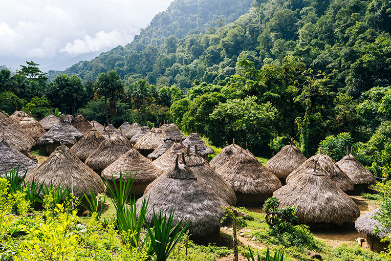

Dag 14–16 · Jungle Bergdorpje · Watervallen · Sierra Nevada
Vertrek na ontbijt vanuit Cartagena richting Santa Marta (elk uur een bus). In Santa Marta een taxi nemen naar de bushalte voor Minca, dan bergop naar het dorpje.
Een prachtige natuurlijke zwemplaats langs een rivier met helderblauwe stromen. Een korte wandeling vanuit het centrum van Minca leidt naar dit verfrissende waterparadijs omgeven door junglevegetatie. Gratis toegang.
Een mooie wandeling door de jungle naar de Marinka waterval. Langs de weg passeer je koffieplantages, brullende apen en tropische vogels. De waterval heeft een zwemplaats onderaan.
Route: Vanuit het centrum van Minca volg je het pad omhoog langs de rivier. Je passeert koffiestructuren, varens en bamboe. De waterval is ±2 km lopen.
Meenemen: Zwemgerei, waterfles, muggenspray, goed wandelschoenen (pad is glibberig bij regen).
Timing: Ga in de ochtend of vroege namiddag — 's middags kan het gaan regenen (tropische buien).

Een dagtrip hoger de Sierra Nevada in vanuit Minca. Per motortaxi naar de hogere delen (€12,50 p.p. retour vanuit het centrum). Dagpas: €4,10. Ruim uitzicht over Santa Marta en de zee.
Motortaxi's in het centrum van Minca brengen je hoger de berg in. Onderhandel de retourprijs vóór je instaptt. ±€12,50 p.p. retour.
Dagpas: Bovenaan is er een toegangspoort voor het natuurgebied — €4,10 p.p.
Wat te zien: Koffieplantages, ceiba-bomen, orchideeën, panorama over Santa Marta en de Caribische zee. Op heldere dagen zie je zelfs de Ciénaga Grande.
Vogels: Minca is een van de beste vogelkijkplekken van Colombia — meer dan 200 soorten. Vroeg gaan voor het beste spektakel.